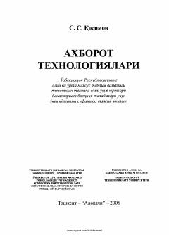

ATOliy o'quv yurtlari talabalari uchun axborot texnologiyalari bo'yicha o'quv qo'llanma.
Ushbu o'quv qo'llanma oliy o'quv yurtlari talabalari uchun axborot texnologiyalari fanini chuqurroq o'rganishga mo'ljallangan. Kitobda axborot tizimlari, telekommunikatsiya texnologiyalari va internet texnologiyalarining amaliy qo'llanilishi batafsil yoritilgan.